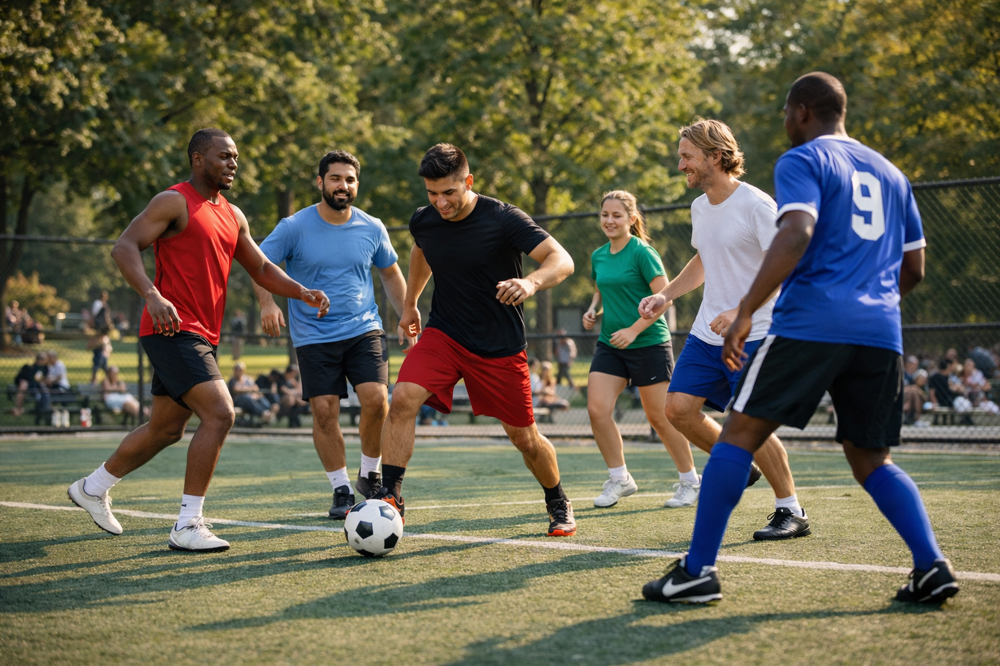
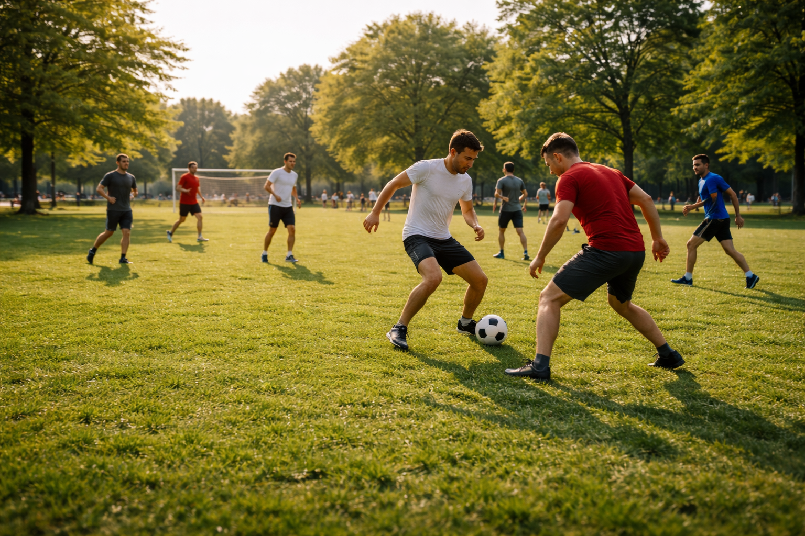
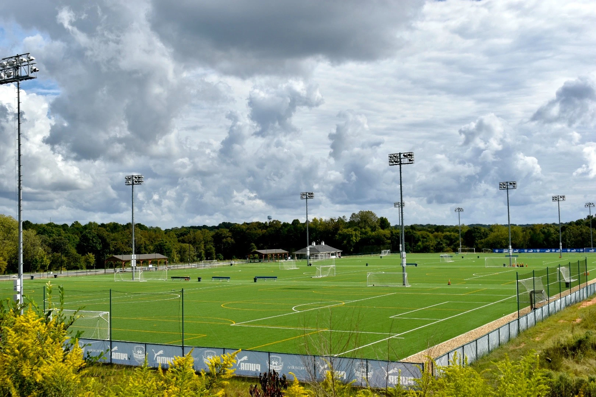

Who Plays Pickup Soccer?
Pickup soccer attracts a wide variety of players because it is informal and welcoming. You do not need to be part of a league or team to participate. Many people simply show up to a field and join the next game. Players can range from beginners learning the sport to experienced players who previously competed in school or club teams.
AI image prompt: photorealistic image of diverse soccer players standing on a public soccer field preparing for a casual pickup game, natural lighting, park setting.
Types of Pickup Soccer Players
| Player Type | Description |
|---|---|
| College Students | Students looking for exercise and social activity after classes. |
| Former Competitive Players | People who played in school or club teams and still enjoy the game. |
| Casual Athletes | Players who enjoy sports and want a relaxed game. |
| Beginners | New players learning the basics of soccer. |
Common Player Backgrounds
- High school or college soccer players
- People trying soccer for the first time
- Friends looking for a fun activity
- Adults staying active through recreational sports
What is Pickup Soccer?
Pickup soccer is an informal version of soccer where players meet at a field and create teams on the spot. There are usually no referees, no official uniforms, and no scheduled league structure. People simply show up, organize teams quickly, and start playing. The focus is on having fun, staying active, and enjoying the game without the pressure of competition.

AI image prompt: photorealistic image of a group of friends playing pickup soccer at a public park on a sunny afternoon, casual clothing, natural lighting.
Pickup Soccer vs Organized Soccer
| Feature | Pickup Soccer | Organized Soccer |
|---|---|---|
| Teams | Created when players arrive | Pre-assigned teams |
| Referees | Usually none | Official referees |
| Schedule | Flexible and informal | Fixed schedule |
| Skill Level | Mixed abilities welcome | Often skill-based divisions |
Key Characteristics
- Open to anyone who wants to play
- Teams are formed quickly at the field
- Games are focused on fun and exercise
- Minimal equipment required
When Do People Play Pickup Soccer?
Pickup soccer games usually happen when people have free time and enough players are available. Many games take place in the evenings after work or classes, when players can meet at a local field. Weekends are also popular because people have more time and larger groups can gather for longer matches.

AI image prompt: photorealistic image of people playing pickup soccer at sunset in a public park, warm lighting, casual atmosphere.
Typical Pickup Soccer Times
| Day | Common Play Time |
|---|---|
| Weekdays | Evenings after work or school |
| Saturday | Morning or afternoon matches |
| Sunday | Relaxed games throughout the day |
Seasonal Patterns
- Spring and fall are the most popular seasons for outdoor pickup games
- Summer games often happen later in the evening to avoid heat
- Winter games may move to indoor soccer facilities
- College campuses often host pickup games during the school semester
Where Can You Play Pickup Soccer?
Pickup soccer games can take place almost anywhere that has an open field and enough space to play. Public parks, school fields, and community sports complexes are some of the most common places. Many players also organize games at college campuses or indoor turf facilities when the weather is bad.

Common Pickup Soccer Locations
| Location Type | Description |
|---|---|
| Public Parks | Open grass fields where people gather for casual games. |
| College Campuses | Students frequently organize pickup matches on campus fields. |
| Community Sports Complexes | Facilities with multiple fields used for recreational sports. |
| Indoor Turf Facilities | Indoor soccer centers used when weather prevents outdoor play. |
Types of Fields Used
- Grass soccer fields at public parks
- Artificial turf fields at schools or sports complexes
- Multi-purpose recreational fields
- Indoor futsal or turf fields during winter months
How Do You Join a Pickup Soccer Game?
Joining a pickup soccer game is simple and requires very little preparation. Most players just show up at a field where people are already playing or waiting for enough players to start a match. Teams are often created on the spot, and new players are usually welcome to join the next game.

Steps to Join a Pickup Game
- Find a local park or field where people play soccer.
- Bring basic gear such as cleats, athletic shoes, and water.
- Introduce yourself and ask if you can join the next game.
- Wait for the current game to finish and join the next match.
Player Preferences
Why Do People Love Pickup Soccer?
Pickup soccer is popular because it combines exercise, competition, and social interaction without the pressure of organized leagues. Players can show up whenever they want, meet new people, and enjoy the game in a relaxed environment. The informal nature of pickup soccer makes it accessible to players of many skill levels.
Benefits of Pickup Soccer
| Benefit | Description |
|---|---|
| Physical Fitness | Running, passing, and movement help improve cardiovascular health. |
| Social Interaction | Players meet new people and build friendships through the game. |
| Flexible Schedule | Games happen when players are available rather than on strict schedules. |
| Skill Improvement | Regular play helps improve ball control, passing, and game awareness. |
Reasons Players Keep Coming Back
- Fun and relaxed environment
- Great way to stay active
- Opportunity to meet new people
- No long-term commitment required
How I Used AI to Create This Website
AI tools were used to help generate images and assist with ideas for the content of this site. Below are examples of prompts that were used while creating the website.
AI Prompt Examples
| AI Tool | Prompt | Result |
|---|---|---|
| ChatGPT | Explain what pickup soccer is and why people enjoy playing it. | Used to help draft the introduction for the "What is Pickup Soccer?" section. |
| Image Generator | Photorealistic image of people playing pickup soccer in a public park on a sunny afternoon. | Used to create the image for the What section. |
| Image Generator | Soccer ball resting on a grass field ready for a casual soccer game. | Used for the image in the How section. |